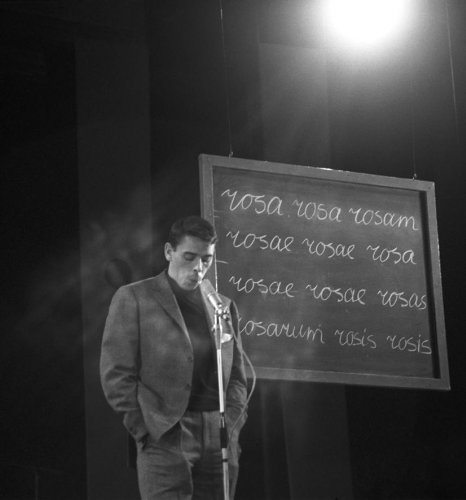
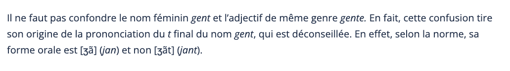
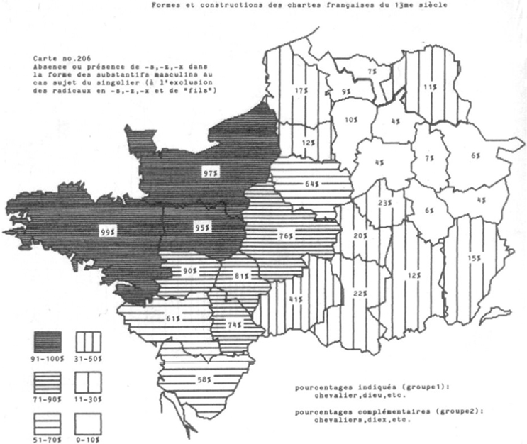
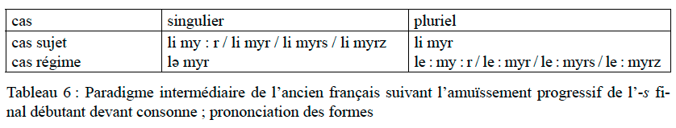
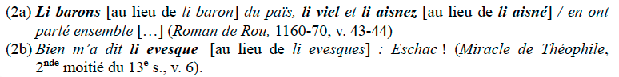
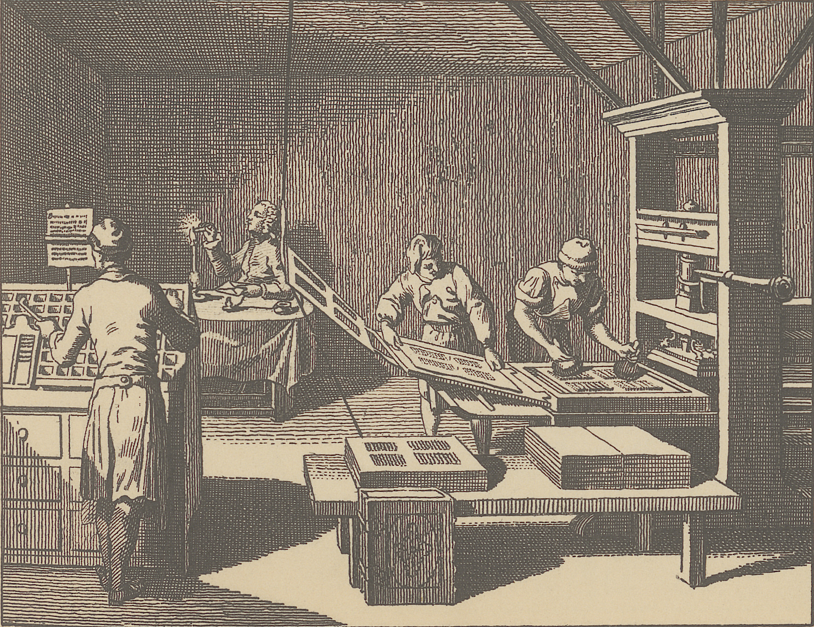
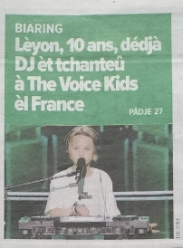

Évolutions morpho-syntaxiques
5.1 L’évolution des formes nominales
5.1.1 Du latin au très ancien français
Identification des parties du discours :
- S’effectue par l’inventaire de leurs catégories grammaticales.
Pour les noms :
Nombre
Genre
Cas
‼️ Fonctionne ainsi jusqu’au moyen français (MF)
5.1.1.1 Le latin classique
- Le nom se distingue des adjectifs, pronoms et déterminants parce que son genre est fixe (ex. un nom est soit intrinsèquement masculin, féminin ou neutre).
- L’expression des trois catégories (genre, nombre, cas) est souvent confondue dans un seul et unique morphème.
Un même morphème cumule plusieurs informations catégorielles simultanément.
C’est la caractéristique d’une langue indo-européenne de type flexionnel (ou synthétique).
Le système nominal en latin classique repose sur l’association de trois catégories grammaticales réparties à travers cinq modèles de déclinaison :
Deux nombres :
Singulier
Pluriel
Trois genres :
Masculin
Féminin
Neutre
Six cas :
Nominatif (Sujet, attribut du sujet)
Vocatif (Apostrophe, interpellation)
Accusatif (Objet direct, direction)
Génitif (Complément du nom, possession)
Datif (Objet indirect, destinataire)
Ablatif (Compléments circonstanciels : moyen, lieu, cause…)
Cinq déclinaisons

5.1.1.2 Évolutions du latin vulgaire
Le latin vulgaire réduit le nombre des cas, tant pour la déclinaison du nom que pour celle de l’adjectif (la déclinaison des pronoms sera plus résistante).
Les particularités de la prononciation du latin vulgaire ont en effet des conséquences importantes dans le domaine de la déclinaison nominale :
causam (acc. sing) se prononce en latin vulgaire comme le latin classique causă (nom. sing) et causā (abl. sing.)
murum (acc. sing.) se prononce comme murō (dat./abl. sing.)
Il en est résulté qu’au Ve siècle, le latin vulgaire ne connaissait plus qu’une déclinaison bicasuelle, c’est-à-dire une déclinaison réduite à deux cas pour l’ensemble des noms et adjectifs : le nominatif et l’accusatif.
Cela a pour conséquence que le latin vulgaire tend à utiliser davantage les prépositions pour signifier les relations syntaxiques entre mots.
En passant du latin classique au latin vulgaire :
Le Nominatif absorbe les fonctions du Vocatif →→ Forme la base du Cas Sujet (CS).
L’Accusatif absorbe les fonctions du Génitif, du Datif et de l’Ablatif (à l’aide de prépositions comme de ou ad/a) →→ Forme la base du Cas Régime (CR).
5.1.1.2.1 Repérage des traits du passage au latin vulgaire (Prépositions)
Latin classique : Iacobus patri librum dat
Latin vulgaire : Jacomos levro a ppatre donat
Latin classique : Iacobus mihi librum patris dat
Latin vulgaire : Jacomos me levro de patre donat

Correctif
Datif \(\rightarrow\) Accusatif prépositionnel (a)
patri = Datif (complément d’objet indirect / destinataire).
a ppatre = Accusatif précédé de la préposition a/ad (ancêtre du à français).
Génitif \(\rightarrow\) Accusatif prépositionnel (de)
patris = Génitif (complément du nom / possession).
de patre = Accusatif précédé de la préposition de (ancêtre du de français).
5.1.1.3 Très ancien français
La déclinaison nominale bicasuelle est clairement attestée dans les Serments de Strasbourg, où Deus, Lodhuuigs, Karlus s’opposent à Deo, Loduuuig, Karlo/Karle :
Pro Deo amour et pro christian poblo et nostre commun saluament, dist di in avant, in quant Deus sauir et podir me dunat, si saluarai eo cist meon fradre Karlo et in aiudha et in cadhuna cosa, si cum om per dreit son fradra saluar dift, in o quid il mi altresi fazet. Et ab Ludher nul plaid nunqua’m prindrai qui, meon uol, cist meon fradre Karle in damno sit.
Si Lodhuuigs sagrament que son fradre Karlo iurat conseruat, et Karlus, meos sendra, de suo part non lo’s tanit, si io returnar non l’int pois, ne io ne neuls cui eo returnar int pois, in nulla aiudha contra Loduuuig nun li iu er.
Afin de rendre la présentation aussi simple que possible, quatre classes nominales de base sont présentées
Classe 1 : Noms, adjectifs et participes masculins du type mur(s) / bon(s)
Classe 2 : Noms, adjectifs et participes féminins du type fille(s) / bone(s)
Classe 3 : Noms, adjectifs et participes féminins se terminant par une consonne du type flor(s) / grant (granz)
Classe 4 : Noms et adjectifs à deux radicaux du type sire / mieudre
5.1.1.3.1 Classe 1
Noms issus de parisyllabiques masculins latins :
L’essentiel des noms et adjectifs masculins de l’AF.
Formes parisyllabiques : formes ayant le même nombre de syllabes pour les deux formes casuelles.
Contrairement aux formes imparisyllabiques.
| Forme latine (Singulier) | Forme latine (Pluriel) | Cas | Ancien français (Singulier) | Ancien français (Pluriel) |
| murus | muri | Cas Sujet | (li) murs | (li) mur |
| muru(m) | muros | Cas Régime | (le) mur | (les) murs |
Sous-classe des masculins parisyllabiques :
Particularité de l’étymon latin : Noms et adjectifs dont le nominatif singulier ne comporte pas de
-sfinal (ex. latin magister, asper).Formes en Ancien Français (AF) : Évolution vers maistre(s), aspre(s).
Apparition d’un
-sanalogique : Au Cas Sujet Singulier (CSS), ces formes reçoivent un-spar analogie avec le modèle général des masculins.Aire de conservation : Phénomène observé dans les dialectes qui conservent la déclinaison bicasuelle.
| Forme latine (Singulier) | Forme latine (Pluriel) | Cas | Ancien français (Singulier) | Ancien français (Pluriel) |
| magister ?? | magistri | Cas Sujet (CS) | (li) maistre(s) | (li) maistre |
| magistru(m) | magistros | Cas Régime (CR) | (le) maistre | (les) maistres |
5.1.1.3.2 Classe 2
- La classe la plus importante des noms féminin, référant à des animés et des inanimés.
Abandon de la déclinaison casuelle, non seulement au singulier, où les formes se confondaient déjà en latin tardif…
Mais aussi au pluriel, où les formes auraient pu conserver une déclinaison casuelle à l’aide de la présence / absence de l’-s final. Néanmoins, aucune forme du féminin de cette classe ne garde de trace de déclinaison.
| Forme latine (Singulier) | Forme latine (Pluriel) | Cas | Ancien français (Singulier) | Ancien français (Pluriel) |
| femina | feminae -> feminas | Cas Sujet (CS) | (la) feme | (les) femes |
| femina(m) | feminas | Cas Régime (CR) | (la) feme | (les) femes |
5.1.1.3.3 Classe 3
- De noms et adjectifs féminins qui se terminent en AF par une consonne : la classe 3.
Les noms réfèrent avant tout à des inanimés comme flors / flor, maisons / maison, mers / mer, ou à des notions abstraites comme citez / cité, vertuz / vertu.
L’étymon latin appartient généralement à la troisième déclinaison latine.
Le paradigme est devenu parisyllabique dès les premiers textes en français.
Il s’agit sans doute d’une régularisation analogique sur le paradigme masculin, dans la mesure où ces cas sujet analogiques existent en particulier dans les dialectes qui conservent la déclinaison.
| Forme latine (Singulier) | Forme latine (Pluriel) | Cas | Ancien français (Singulier) | Ancien français (Pluriel) |
| gens -> gentis | gentes | Cas Sujet (CS) | (la) gen(z) | (les) gens /genz |
| gente(m) | gentes | Cas Régime (CR) | (la) gent | (les) gens /genz |

5.1.1.3.4 Classe 4
- Il existe un certain nombre de sous-classes comprenant non seulement des formes du masculin, mais aussi du féminin.
Les noms réfèrent essentiellement à des animés, surtout à des humains.
Le cas sujet pluriel des masculins des diverses sous-classes s’aligne sur celui des masculins parisyllabiques.
| Forme latine (Singulier) | Forme latine (Pluriel) | Cas | Ancien français (Singulier) | Ancien français (Pluriel) |
| latro | latroni | Cas Sujet (CS) | (li) lerre(s) | (li) larron |
| latrone(m) | latrones | Cas Régime (CR) | (le) larron | (les) larrons |
- Le cas sujet féminin conserve l’absence étymologique de distinction casuelle au pluriel, caractéristique de tous les noms (et adjectifs) féminins.
- Par contre, le cas sujet singulier féminin garde la possibilité de se distinguer à l’aide de l’-s final.
| Forme latine (Singulier) | Forme latine (Pluriel) | Cas | Ancien français (Singulier) | Ancien français (Pluriel) |
| soror | sorores | Cas Sujet (CS) | (la) suer(s) | (les) serors |
| sorore(m) | sorores | Cas Régime (CR) | (la) soror | (les) serors |
5.1.1.3.5 Exercice
Identifiez le cas (Cas Sujet ou Cas Régime) ainsi que le nombre (Singulier ou Pluriel) du mot en gras dans chaque extrait en ancien français.
Sa suer est d’une chambre issue (Wace, Brut, v. 14273)
Tristran s’en torne avoc son mestre. (Béroul, Tristan, v. 2451)
…cil qui de ce furent mestre les ont d’erbe fresche jonchiez. (Renart leaks/Dole, v. 337)
…par le conseil de ses granz mestres (Renart Dole, v. 2840)
…la est remés la genz menue (Eneas, v. 3193)
Ad une voiz crient la gent menude (St Alexis, v. 531)
Turnat sa teste vers la paiene gent (Roland, v. 2360)
…anviron lui vienent ses genz (Eneas, v. 5922)
Se puis veeir ma gente sorur Alde (Roland, v. 1720)
…trois faees serors la firent (Eneas, v. 4015)
…il parolent des deus serors (Chrétien de Troyes, Yvain, v. 6158)
…une fame estoit dame de tot lo regne. (Eneas, v. 553)
Ne reverrunt lor meres ne lor femmes. (Roland, v. 1402)
Mot ot li mestre Tristran chier (Béroul, Tristan, v. 971) (Attention : ici, observez bien la nature grammaticale ou le groupe)
5.1.2 Version avec traductions pour vous aider
Identifiez le cas (Cas Sujet ou Cas Régime) ainsi que le nombre (Singulier ou Pluriel) du mot en gras dans chaque extrait en ancien français.
Pour identifier correctement le cas (Cas Sujet ou Cas Régime) ainsi que le nombre (Singulier ou Pluriel) d’un nom en ancien français, appuyez-vous systématiquement sur les trois indices suivants :
- Le genre du mot : Détermine la classe morphologique (masculin ou féminin).
- La marque flexionnelle : Présence ou absence du -s (ou -z) final.
- La fonction syntaxique :
- Sujet ou attribut du sujet \(\rightarrow\) Cas Sujet (CS)
- Complément (COD, COI, complément du nom, complément prépositionnel, etc.) \(\rightarrow\) Cas Régime (CR)
Sa suer est d’une chambre issue (Wace, Brut, v. 14273 : ‘Sa sœur est sortie d’une chambre’)
Tristran s’en torne avoc son mestre. (Béroul, Tristan, v. 2451 : ‘Tristan s’en va avec son maître d’armes’)
…cil qui de ce furent mestre les ont d’erbe fresche jonchiez. (Renart leaks/Dole, v. 337 : ‘ceux qui étaient chargés de préparer des lieux les ont jonchés d’herbe fraîche’)
…par le conseil de ses granz mestres (Renart Dole, v. 2840)
…la est remés la genz menue (Eneas, v. 3193 : ‘là sont restées les petites gens’)
Ad une voiz crient la gent menude (St Alexis, v. 531 : ‘Les petites gens crient d’une même voix’)
Turnat sa teste vers la paiene gent (Roland, v. 2360 : ‘Il tourna sa tête vers les païens’)
…anviron lui vienent ses genz (Eneas, v. 5922 : ‘Ses gens viennent autour de lui’)
Se puis veeir ma gente sorur Alde (Roland, v. 1720 : ‘Si je peux voir ma sœur Aude’)
…trois faees serors la firent (Eneas, v. 4015 : ‘Trois fées sœurs la firent’)
…il parolent des deus serors (Chrétien de Troyes, Yvain, v. 6158 : ‘Ils parlent des deux sœurs’)
…une fame estoit dame de tot lo regne. (Eneas, v. 553 : ‘Une femme régnait sur tout le pays’)
Ne reverrunt lor meres ne lor femmes. (Roland, v. 1402 : ‘Ils ne reverront ni leurs mères, ni leurs femmes’)
Mot ot li mestre Tristran chier (Béroul, Tristan, v. 971 : ‘Son maître d’armes avait beaucoup d’affection pour Tristan’)
Correctif détaillé
suer : Cas Sujet Singulier
- Explication : Nom féminin imparisyllabique (étymon soror). Forme sujet singulier sans -s.
mestre : Cas Régime Singulier
- Explication : Masculin parisyllabique issu du latin magister (régime singulier sans -s).
mestre : Cas Sujet Pluriel
- Explication : Masculin parisyllabique au sujet pluriel (absence étymologique de -s).
mestres : Cas Régime Pluriel
- Explication : Masculin parisyllabique au régime pluriel (présence du -s du régime pluriel).
genz : Cas Sujet Singulier
- Explication : Féminin classe 3 avec -z (-s) analogique au cas sujet singulier.
gent : Cas Sujet Singulier
- Explication : Féminin classe 3 sous sa forme étymologique (sans -s au cas sujet singulier).
gent : Cas Régime Singulier
- Explication : Féminin classe 3 au cas régime singulier (forme sans -s).
genz : Cas Sujet Pluriel
- Explication : Féminin classe 3 au cas sujet pluriel (présence de la marque de pluriel -z / -s).
sorur : Cas Régime Singulier
- Explication : Féminin imparisyllabique au régime singulier (modification du radical suer →→ sorur).
serors : Cas Sujet Pluriel
- Explication : Féminin imparisyllabique au sujet pluriel (radical du régime + -s).
serors : Cas Régime Pluriel
- Explication : Féminin imparisyllabique au régime pluriel (régime de préposition deus).
fame : Cas Sujet Singulier
- Explication : Féminin classe 1 (sans distinction casuelle au singulier).
femmes : Cas Régime Pluriel
- Explication : Féminin classe 1 au régime pluriel (COD du verbe reverrunt).
mestre : Cas Sujet Singulier
- Explication : Masculin parisyllabique au sujet singulier (forme étymologique sans -s analogique, précédée de l’article sujet li).
5.1.2.1 Le Genre
Des trois genres latins, les langues romanes conservent le masculin et le féminin, en gardant quelques vestiges du neutre.
En principe, les noms français conservent le genre étymologique, sauf le neutre, mais il se produit des changements :
Les noms abstraits imparisyllabiques masculins en -or deviennent des parisyllabiques féminins :
- calor \(\rightarrow\) caloris > chaleur(s) ; dolor \(\rightarrow\) doloris > douleur(s)
- contrairement à l’espagnol qué calor ou à l’italien
Les noms d’arbres étaient féminins en latin et sont tous devenus masculins :
- fraxinus > (le) fresne ; pinus > (le) pin
Les noms neutres du latin sont pour la plus grande majorité réanalysés comme masculins, du fait que la forme du singulier neutre latin ressemble au masculin accusatif singulier latin :
- argentum \(\rightarrow\) (li) argenz / (le) argent ; aurum \(\rightarrow\) (li) ors / (le) or ; cornu \(\rightarrow\) (li) corz / (le) cor(n) ; velum \(\rightarrow\) (li) voils / (le) voil ; vinum \(\rightarrow\) (li) vins / (le) vin
Au pluriel, les neutres latins se terminent en -a, ce qui les rend similaires à la forme du singulier nominatif de la plus grande classe des féminins, la classe 2.
Par analogie, un certain nombre de noms neutres pluriels en -a ont été réanalysés comme des féminins singuliers :
arma \(\rightarrow\) (la) arme ; corn(u)a \(\rightarrow\) (la) corne ; festa \(\rightarrow\) (la) feste ; folia \(\rightarrow\) (la) feuille (avec un sens parfois collectif : le feuillage) ; labra \(\rightarrow\) (la) lèvre ; opera \(\rightarrow\) (la) oeuvre ; vela \(\rightarrow\) (la) voile.
Ainsi, dans certains cas, deux noms français proviennent du même neutre latin, un nom masculin dérivé du singulier, et un nom féminin du pluriel. Ceci vaut par exemple pour les paires suivantes : cor(n) – corne ; grain – graine ; tourment – tourmente ; vaisseau – vaisselle.
- Remarque comparative (italien) : il labbro / le labbra ; il velo / le vela ; foglio / fogli vs foglia / foglie.
Vestiges du genre neutre latin :
Bien que le genre neutre ait disparu en tant que catégorie globale au profit du masculin et du féminin, des traces subsistent en ancien français :
Constructions impersonnelles : Distinction (au moins théorique) entre le neutre et le masculin :
Neutre : il / cela est bon (accord au neutre, sans -s).
Masculin : il est bons (avec le -s du cas sujet masculin appliqué à un être humain).
Formes obliques et expressions figées :
Noms de jours : Issus du génitif singulier latin, ex. lunae dies > lundi.
Noms de fêtes : Issus du génitif pluriel, ex. [festa] candelorum > Chandelour / Chandeleur.
La réunion de plusieurs fonctions sous la seule forme du cas régime est attestée notamment par la Séquence de sainte Eulalie, où Deo est tantôt un complément du nom, tantôt un objet :
Uoldrent la ueintre li Deo inimi (v. 3)
La polle sempre non amast lo Deo menestier (v. 10)
Qu’elle Deo raniet chi maent sus en ciel (v. 6)

5.1.3 Le déclin de la déclinaison bicasuelle : l’ancien français (12ᵉ–13ᵉ s.)
5.1.3.1 Un système en mouvement
- Pour un lecteur peu familiarisé, l’ancien français est souvent déroutant :
- Absence de standardisation : grande variation formelle et orthographique, parfois au sein d’un même texte.
- Évolution à rythme variable : les changements progressent à des vitesses différentes selon le genre textuel et les variables diasystématiques (géographie, registre, groupe social).
- La variation des formes nominales a deux sources :
- La transmission des textes : juxtaposition de formes de périodes et de dialectes différents.
- Le processus de réduction de la déclinaison bicasuelle, en cours pendant toute la période.
- ➡️ Dans un même texte, on trouve des formes qui respectent la déclinaison et d’autres qui ne la respectent pas.
5.1.3.2 Où ? Une désintégration d’ouest en est
- Ouest (anglo-normand, normand) : désintégration visible dès les tout premiers textes.
- Nord et Est (Picardie, Wallonie, Lorraine, Bourgogne) : la déclinaison se maintient jusqu’au moyen français.

5.1.3.3 Quand ? Chronologie
- XIIᵉ siècle : système de déclinaison globalement stable dans les textes.
- Premières réductions au seul cas régime dans la zone ouest du domaine d’oïl (surtout l’anglo-normand).
- XIIIᵉ siècle : image plus hésitante, premiers signes nets de l’abandon de la déclinaison.
- Progression géographique :
- Ouest (anglo-normand)
- Domaine central (de la Normandie aux portes de Paris)
- Domaines champenois et picard
5.1.3.4 Quel cas l’emporte ?
- Au cours de la désintégration, c’est généralement la forme du cas régime (CR) qui remplace celle du cas sujet (CS), plus rarement l’inverse.
- Il ne s’agit pas d’un emploi aléatoire des formes, mais d’un processus progressant de façon prévisible.
À votre avis, pourquoi est-ce le cas régime qui l’emporte ?
5.1.3.5 Réponse : le poids des fonctions
- Les fonctions du cas sujet sont limitées :
- sujet (quand il est exprimé)
- attribut du sujet
- apposition au sujet
- parfois l’apostrophe
- Le cas régime couvre toutes les autres fonctions (il cumule l’héritage de quatre cas latins).
- ➡️ Les formes du cas sujet ne représentent qu’entre un tiers et un dixième des formes nominales.
5.1.3.6 Pourquoi la déclinaison disparaît-elle ?
- Hypothèse phonétique : l’amuïssement progressif du -s final aurait causé la disparition de la déclinaison.
- Réfutation :
- La déclinaison a aussi disparu dans d’autres langues romanes (ex. l’espagnol) où le -s final se prononce toujours.
- L’amuïssement du -s n’a pas fait disparaître la distinction singulier / pluriel, qui repose pourtant elle aussi sur la présence ou l’absence du -s.
- Conclusion : pas de lien strictement causal entre l’amuïssement du -s et la fin de la déclinaison.
5.1.3.7 Le rôle du contexte syntaxique
- Une même forme peut correspondre à plusieurs valeurs :
- mur : singulier cas régime ou pluriel cas sujet
- bel : masculin singulier cas régime ou masculin pluriel cas sujet
- C’est le contexte (notamment la présence et la forme de l’article) qui permet de désambiguïser.
- Pourtant, à l’origine, en ancien français comme en latin, chaque forme porte sa propre marque flexionnelle.
5.1.3.8 Un système devenu opaque
- Deux changements, pas forcément liés, rendent le système opaque :
- la désintégration du système casuel ;
- l’amuïssement progressif du -s final.
- L’amuïssement se répand irrégulièrement selon les dialectes : il commence au 11ᵉ s. et aboutit au 16ᵉ s. (Schøsler 1984, section 9.3).
- Une forme écrite murs se réalise d’au moins quatre façons : [myrs] / [myrz] / [myːr] / [myr]
- -s sourd, -s sonore en liaison, allongement compensatoire ou rien du tout.
- Le principe « une forme – une fonction » n’est plus respecté : ni le cas ni le nombre ne sont clairement distingués.

5.1.3.9 Les déterminants prennent le relais
- Seuls les déterminants masculins gardent au cas sujet une distinction casuelle claire, au détriment du nombre (li = singulier et pluriel).
- La déclinaison des déterminants reste en vigueur plus longtemps que la déclinaison nominale (Schøsler 1984, chap. 8 et 9).
- ➡️ Signe que les déterminants sont en train de devenir la tête du groupe, porteuse des marques flexionnelles.

5.1.3.10 La variation selon l’usage
5.1.3.10.1 Variation diastratique (sociale)
- Étude des chartes luxembourgeoises (dialecte de l’Est, conservateur pour la déclinaison).
- L’usage casuel varie selon le niveau social du destinataire :
- pour les chartes destinées à la chancellerie royale, le scribe se conforme à l’usage de Saint-Denis (dialecte du Centre), qui ne respecte plus la déclinaison.

5.1.3.10.2 Variation diaphasique (genre textuel)
- La déclinaison se perd d’abord dans les textes en prose, ensuite dans les textes en vers.
- ⚠️ Difficulté : le temps et l’espace interfèrent, faute de textes réellement comparables.
5.1.3.10.3 Variation diamésique (oral représenté vs narration)
- Un seul texte permet de le montrer : la chantefable Aucassin et Nicolette (13ᵉ s.).
- Parties en vers et en prose, parties narratives et parties d’« oral représenté », toutes d’un même auteur.
- La désintégration apparaît plus tôt :
- dans l’oral représenté en prose que dans la narration en prose ;
- dans l’oral représenté en vers que dans la narration en vers.
5.1.4 Le moyen français et le français préclassique (14ᵉ – fin 16ᵉ s.)
5.1.4.1 Contexte
- Le statut du français change profondément :
- forte influence des langues classiques et de l’italien ;
- dès le 16ᵉ s., auteurs et grammairiens veulent hisser le français au rang des langues de prestige (latin, italien) en fixant ses règles.
- L’imprimerie diffuse les textes en plus grand nombre et transmet des variétés plus « standardisées », réduisant la variation diatopique.
- L’influence des langues classiques et modernes touche surtout la graphie, moins la morphologie.

5.1.4.2 Trois grands changements
- L’abandon de la déclinaison casuelle
- Les réorganisations analogiques, en particulier des formes du féminin
- L’établissement du groupe nominal
- N.B. Ces trois processus commencent dès les premiers textes français, mais n’aboutissent qu’à la fin du 16ᵉ s.
5.1.4.3 1. L’abandon de la déclinaison : trois cas de figure
5.1.4.3.1 a. On garde le cas régime (règle générale)
- Le cas régime est infiniment plus sollicité que le cas sujet : il cumule les fonctions de quatre anciens cas latins.
- C’est l’aboutissement d’un processus long de trois siècles.
5.1.4.3.2 b. On garde le cas sujet (exceptions)
- Au XVᵉ s., le cas sujet ne survit plus que pour quelques noms :
- dont l’opposition casuelle reposait sur une alternance de radical ;
- et qui étaient plus fréquents au cas sujet qu’au cas régime.
- Il s’agit surtout de noms de personnes, souvent employés comme termes d’adresse :
- pâtre, peintre, sœur, Hugues, Pierre…
5.1.4.3.3 c. On garde les deux formes, avec des sens différents
- Les deux anciennes formes casuelles deviennent deux mots distincts : chantre / chanteur ; copain / compagnon ; gars / garçon ; pute / putain ; sire / seigneur / monseigneur.
- Différenciation sémantique :
- pastre (CS) / pasteur (CR) → pâtre (gardien de troupeaux) / pasteur (gardien des âmes)
- copain (CS) / compagnon (CR) → personne qu’on apprécie / personne avec qui on partage une activité
- gars (CS) / garçon (CR) → homme (registre familier) / enfant de sexe masculin
- Différenciation fonctionnelle :
- on (CS) / homme (CR) → pronom / nom
- // ndls. men
5.1.4.4 2. Les réorganisations analogiques
5.1.4.4.1 Singulier et pluriel
- Au XVIᵉ s., après quelques tâtonnements, on reconstruit des couples singulier / pluriel homogènes :
- chastel / chasteaux → chasteau / chasteaux (durable)
- animal / animaux → animau / animaux → animal / animaux (transitoire)
5.1.4.4.2 Les adjectifs épicènes
- Les adjectifs épicènes du type fort, grant s’alignent sur le modèle bon / bone :
- formes analogiques forte, grande, avec distinction claire du genre ;
- grant et fort au féminin dominent encore au 15ᵉ s., puis disparaissent au profit de grande et forte au 17ᵉ s.
- Adverbes en -ment : alignement parallèle
- granment, forment, briément → grandement, fortement, brièvement
5.1.4.4.3 Genre ou cas ? L’exemple de tel
- Tel, épicène en ancien français, montre une opposition dialectale nette :
- Ouest et Centre — renforcement du genre : fréquence élevée des féminins analogiques en -e ; la déclinaison y est en cours d’abandon.
- Est et Nord — renforcement du cas : prédominance des formes marquant le cas par -s ; le système CS / CR s’y maintient, aux dépens de la marque de genre.
5.1.4.4.4 Une analogie en sens inverse
- Parfois, c’est le masculin qui est refait sur le féminin, par suppression du -e final d’une forme historiquement invariable :
- Durable : public (tiré de publique)
- éphémères (latin -ilis) : agil, difficil, docil, facil, fertil, inutil, subtil… qui n’ont pas survécu.
5.1.4.4.5 Le participe présent : deux tendances contradictoires
- Généralisation de l’accord en genre et en nombre, qui gagne même le gérondif (confusion entre les deux) :
- « Les voix non encore voix, bramantes en tous lieux » (D’Aubigné, Tragiques VI, 1620)
- Invariabilité :
- « larme de gomme en ambre durcissant » (Marot, Le second livre de la Méthamorphose d’Ovide, 1556)
5.1.4.4.6 Les suffixes : -eur / -euse
- Depuis le moyen français, -eur se prononce comme -eux (/r/ final amuï).
- On l’associe donc à un féminin en -euse plutôt qu’au féminin étymologique en -eresse :
- chanteur [ʃɑ̃tø] → chanteuse [ʃɑ̃tøz], sur le modèle amoureux [amurø] → amoureuse [amurøz]
- au lieu de chanteur [ʃɑ̃tœr] → chanteresse [ʃɑ̃tœrɛs]
- Au rétablissement du /r/, ces féminins refaits concurrencent, voire évincent, les féminins étymologiques.
- Survivances : pécheur / pécheresse, vengeur / vengeresse
- Le type danseur / danseuse tend à s’imposer en FMod.
5.1.4.5 3. L’établissement du groupe nominal
- Les articles, d’emploi sporadique jusque-là, s’installent progressivement ; au XVIᵉ s., seules quelques hésitations touchent encore l’article partitif.
- En remplaçant les marques flexionnelles par des prépositions et des articles, le français passe d’une langue à dominante flexionnelle à une langue à dominante syntaxique.
- La place devant le nom étant de plus en plus occupée par l’article, l’adjectif qualificatif tend à se postposer (on disait aussi bien la Rouge Mer que la Mer Rouge).
5.1.4.5.1 Du dependent-marking au head-marking
- Latin et très ancien français : chaque élément du groupe porte ses marques de cas, de genre et de nombre (dependent-marking) ; la notion même de « groupe nominal » au sens moderne pose question.
- Évolution : le français devient analytique et configurationnel ; le déterminant devient le porteur principal du genre et du nombre (prédétermination).
- Transition : fin de l’ancien français – début du moyen français ;
- plus tôt dans les dialectes de l’Ouest, plus tard à l’Est et au Nord-Est.
5.1.4.5.2 La généralisation des déterminants en chiffres
- Comparaison des traductions de Cicéron par Jean d’Antioche (XIIIᵉ s.) et par Bornecque (FMod) :
- XIIIᵉ s. : environ \(1/3\) des groupes nominaux sans déterminant exprimé ;
- FMod : le nombre de déterminants exprimés a doublé.
5.1.5 La période classique (17ᵉ et 18ᵉ s.)
5.1.5.1 Deux mouvements contrastés
- Standardisation : les grammairiens éliminent les formes anciennes (diachronie) et dialectales (diatopie).
- Variation : les écrits de l’époque montrent la persistance de variations liées au style et au canal (diaphasie / diamésie).
5.1.5.2 Des changements morphologiques limités
- L’article es (enclise de en les) sort de l’usage au profit de dans les ; l’article ou (enclise de en le) est réinterprété en au (< a le).
- La forme ça, réduction de cela, apparaît.
- Les relatifs du paradigme lequel, très nombreux en MF, reculent au profit du paradigme hérité du latin (qui, que, quoi, dont, où).
- Le pronom on commence à concurrencer nous.

5.1.5.3 Le genre du nom
- Selon les grammairiens, les femmes choisiraient le féminin pour des noms que les hommes emploient au masculin (genre retenu en FMod, sauf pour étude) :
- âge, caramel, couple, étude, ouvrage, poison
5.1.5.4 La variation
5.1.5.4.1 Diaphasie
- Les innovations syntaxiques apparaissent d’abord dans les genres de la communication de proximité.
- Selon Caron (1992b), les « fautes » relevées dans l’écriture de la noblesse vers 1680 sont des faits naguère acceptables, qui deviennent archaïques à mesure que s’impose la variété défendue par Vaugelas.
5.1.5.4.2 Diamésie
- Vaugelas reconnaît que certaines règles sont respectées à l’écrit mais pas à l’oral : elles sont imposées « d’en haut ».
Il y a fort peu que l’on commence à practiquer cette reigle […], car ny Amyot, ny mesmes le Cardinal du Perron, ny M. Coiffeteau, ne l’ont jamais observée. Certes en parlant on ne l’obserue point, mais le stile veut estre plus exact. — Vaugelas 1647 : 80

5.1.6 Le français moderne (FMod)
5.1.6.1 La féminisation des noms de fonctions
- Académie française : position traditionnellement conservatrice ; plusieurs déclarations dénoncent la féminisation systématique des noms de métiers et de fonctions comme un contresens linguistique.
- Canada francophone : presque tous les titres et fonctions peuvent être féminisés :
- mairesse, maîtresse de poste, députée, associée, chargée de projet, générale, consule, écrivaine, chirurgienne, informaticienne, bouchère, plombière, greffière, chercheuse, ingénieure, gouverneure, professeure, assureure, réviseure, superviseure, procureure, docteure
5.1.6.2 Le renouvellement du vocabulaire
- Langue standard : la siglaison (SNCF, CNRS) depuis le début du XXᵉ s.
- Langue parlée, parlers jeunes, « français avancé » :
- Troncation : biz (bizness), leur (contrôleur)
- Réduplication : leurleur (contrôleur)
- Métaphore : galère
- Métonymie : casquette (contrôleur)
- Verlan : beur (arabe), meuf (femme), céfran (français), babtou (toubab), reubeu (beur)
5.1.6.3 Implications typologiques
- À l’écrit, les catégories nominales restent marquées par une flexion en fin de mot.
- Mais la tendance générale est à l’antéposition des marques :
- dans le groupe nominal (déterminants) ;
- dans le groupe verbal (pronoms sujets, auxiliaires).
5.2 Histoire du participe passé
5.2.1 Jusqu’au XIIIe siècle
- L’ordre des mots est relativement libre:
- Si auxiliaire être: accord avec le sujet
- Si auxiliaire avoir: accord avec le COD, peu importe sa position dans la phrases
- Ex. J’ai les lettres écrites.
- Ex. J’ai écrites les lettres.
- le participe passé s’accordait alors comme un attibut de l’objet: par exemple, j’ai les mains salies
5.2.2 XVIe siècle
- L’ordre des mots devient plus figé auxiliaire - participe - objet:
- Si auxiliaire être: accord avec le sujet
- L’accord avec avoir est en diminution
- Clément Marot Épigrammes dédiées à François Ier, 1538
- Il propose d’accorder le participe passé avec l’objet si ce dernier est placé avant le participe passé sur la base du modèle italien 🍝
- Ex. Dieu nous a faictz <–> Dio noi a fatti

L’usage de cette règle n’est pas encore systémique
Mignonne, allons voir si la rose
Qui ce matin avait desclose
Sa robe de pourpre au soleil…

5.2.3 XVIᵉ siècle : un accord qui ne s’entend plus
- On n’entend plus l’accord car on ne prononce plus le ‑s final.
- Ex. Je les ai vus /ʒə lez e vy/
- Sauf en cas de liaison :
- Ex. Je les ai vus à la fête /ʒə lez e vyz a la fɛt/
- La distinction de genre au participe passé ne s’entend plus à l’oral, à l’exception d’une trentaine de verbes du 3ᵉ groupe (ex. mise, prise, faite, dite).
- Environ 99 % des participes passés n’ont aucune distinction phonique au féminin.
- 🚨 Français de Belgique
5.3 Les règles académiques
- Vaugelas restreint l’application de la règle d’accord du participe passé précédé de son COD (règle de Marot).
- L’accord s’effectue uniquement lorsque le participe passé se trouve en fin de phrase.
- Cas d’invariabilité du participe passé (si suivi d’un autre élément) :
- Suivi d’un attribut : « les habitans nous ont rendu maistres de la ville »
- Suivi d’un complément prépositionnel : « les maux qu’il a fait à son fils »
- Suivi d’un sujet inversé : « la peine que m’a donné cette affaire »
- Suivi d’un infinitif : « je l’ai fait peindre »
Pourquoi ?
- Sans doute qu’on pouvait encore entendre l’allongement caractéristique du féminin, mais seulement en fin de phrase.
- Cela s’entend encore aujourd’hui en fin de phrase, en Belgique ou en Suisse.
- L’abbé d’Olivet préconise d’accorder le participe passé suivi d’un infinitif :
- « Je les ai convaincus de venir »
- Distinction selon l’agent de l’action :
- Accord : Le sujet fait l’action de l’infinitif (le COD est l’agent de l’infinitif).
- « On les (les chanteurs) a entendus chanter » (on a entendu les chanteurs chanter)
- Invariabilité : Le sujet ne fait pas l’action de l’infinitif (le COD n’est pas l’agent de l’infinitif).
- « On les (les chants) a entendu chanter » (on a entendu
les chantschanter)
- « On les (les chants) a entendu chanter » (on a entendu
- Accord : Le sujet fait l’action de l’infinitif (le COD est l’agent de l’infinitif).
- Exception pour faire :
- Le participe passé du verbe faire suivi d’un infinitif reste systématiquement invariable dans tous les cas :
- « Je les ai fait peindre »
- Le participe passé du verbe faire suivi d’un infinitif reste systématiquement invariable dans tous les cas :

Sur le site de l’Académie
- La règle de l’accord avec le COD qui précède le verbe a six exceptions :
- si l’objet est en
- si l’objet est un complément de mesure : les 100 mètres que j’ai couru
- oui mais pas si figuré : les 100 mètres que j’ai courus
- quand il est objet de l’infinitif : les chants que j’ai entendu chanter
- quand le verbe est impersonnel
- faire + infinitif

Pourquoi c’est bizarre ?
- Rupture avec la règle générale :
- Dans tous les autres cas, les formes verbales s’accordent avec le sujet.
- Dépendance à la position :
- L’accord en général ne se fait pas en fonction de la position des mots dans la phrase.

5.3.1 Les verbes pronominaux
- Extension de la règle d’accord au XVIIIᵉ siècle :
- Au XVIIIᵉ siècle, l’Académie française étend l’accord avec l’objet qui précède aux verbes pronominaux.
- Exemple : « Les choses qu’elle s’est dites. »
- Au XVIIIᵉ siècle, l’Académie française étend l’accord avec l’objet qui précède aux verbes pronominaux.
- Règles d’invariabilité :
- Le participe passé reste donc invariable si l’objet suit le verbe ou s’il s’agit du pronom en.
Sur le site de l’Académie française, l’accord du participe passé des verbes pronominaux suit plusieurs règles selon la fonction syntaxique du pronom se :
- Absence d’accord lorsque le pronom se n’est pas complément :
- Le participe passé ne s’accorde pas lorsque le pronom se n’est pas un complément d’objet direct (ce qui s’apparente au fonctionnement des verbes essentiellement pronominaux).
- Exemples :
- « Ils se sont souvenu. »
- vs
- « La propriété s’est vendue à bas prix. »
- « Ils se sont souvenu. »
- Exemples :
- Le participe passé ne s’accorde pas lorsque le pronom se n’est pas un complément d’objet direct (ce qui s’apparente au fonctionnement des verbes essentiellement pronominaux).
- Accord lorsque le pronom se peut être analysé comme un complément :
- Quand le pronom se est analysé comme un complément, le verbe pronominal suit les règles d’accord de l’auxiliaire avoir.
- Exemples :
- « Elles se sont lavées les mains. »
- « Ils se sont succédé. »
- « Ils se sont vu accorder des congés. »
- « Ils se sont vus accorder des congés à leurs employés. »
- Exemples :
- Quand le pronom se est analysé comme un complément, le verbe pronominal suit les règles d’accord de l’auxiliaire avoir.
5.4 Les règles scolaires
- L’introduction de règles artificielles au XIXe siècle
- Accord selon le pronom COD :
- « Les pommes, je les ai mangées » (accord avec le COD les).
- « Des pommes, j’en ai mangé » (invariabilité avec le pronom en).
- Accord selon la valeur du complément :
- « La somme que j’ai payée » (accord car que est COD).
- « La somme que ça m’a coûté » (invariabilité car que est complément de prix/mesure).
- Accord selon le pronom COD :
« L’accord du participe passé avec avoir est la règle la plus artificielle de la langue française. » - Louis-Nicolas Bescherelle
En 1900, Georges Leygues publie un arrêté visant à simplifier l’enseignement de la syntaxe française.
Mais l’Académie est fâchée !

Que méchant GIF - Découvrez sur GIFER L’arrêté est supprimé en 1901.
1996, Arrêté Haby
- Régularise l’accord du participe passé.
- Tolérance étendue aux cas complexes : pronom en, complément de mesure, participes suivis d’un infinitif.
1990 — Rectifications orthographiques
Autorise l’invariabilité du participe passé de laisser suivi d’un infinitif : « les enfants que j’ai laissé partir »
5.4.1 Les verbes pronominaux
- L’accord académique au XIXᵉ siècle :
- Au XIXᵉ siècle, les verbes pronominaux suivent les règles d’accord académiques, qui comptent au moins trois cas de figure :
- Accord avec le sujet : « Elle s’est lavée. »
- Invariabilité si l’objet direct suit le verbe : « Elle s’est lavé les mains. »
- Accord avec l’objet direct si celui-ci précède le verbe : « Les mains qu’elle s’est lavées. »
- Au XIXᵉ siècle, les verbes pronominaux suivent les règles d’accord académiques, qui comptent au moins trois cas de figure :
- La tentative de réforme de 1900 et la réaction académique :
- En 1900, le ministre Georges Leygues, qui propose l’invariabilité du participe passé avec l’auxiliaire avoir, la propose également pour les verbes pronominaux.
- Face à la réaction de l’Académie française, cette proposition est de nouveau abandonnée.
5.5 Les usages littéraires
- Résultats influencés par éditeurs et correcteurs.
- Dans Les Femmes savantes, pas toujours accordé :
- « jamais il ne m’a prié de lui rien dire »
- « des vers de vous qu’il n’a point trouvé beaux » - corrigés en trouvés dans les édtions modernes.

« as‑tu vu la tête qu’il a fait quand il s’est aperçu qu’elle n’était pas là »

« mais je n’avais ni les dons ni les connaissances techniques qu’il eût fallus »

Qui ne respecte pas l’accord avec en ?
- La Fontaine (académicien)
- Georges Duhamel (académicien)
- Alphonse Daudet
- Marguerite Duras
Qui ne respecte pas l’accord avec les verbes de mesure ?
- Racine (académicien)
- Honoré de Balzac
- Joseph Kessel (académicien)
L’accord du participe suivi d’un infinitif ?
- Racine (académicien) n’accorde pas toujours.
- Corneille (académicien) accorde toujours.